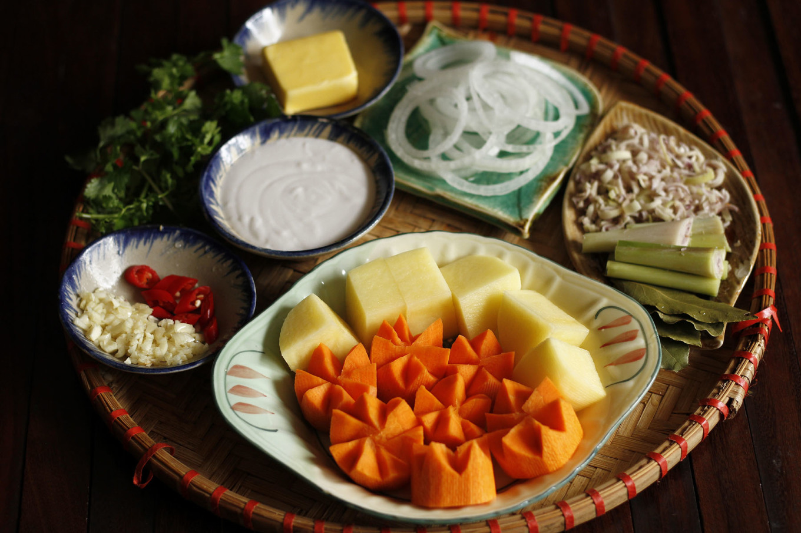
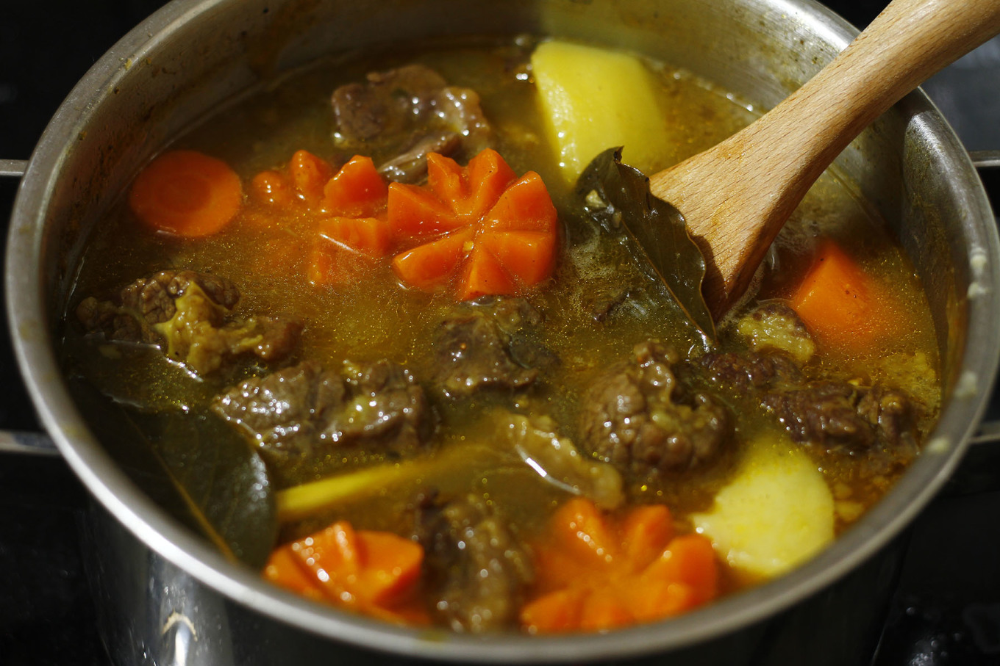

HTML Images Demo
Cách làm cà ri bò bổ dưỡng cho ngày nồm ẩm
Cà ri nóng hổi với thịt bò mềm ngon, khoai giữ nguyên miếng, nước sốt sánh vàng, vị béo ngậy từ nước cốt dừa. Món này chấm cùng bánh mì hoặc ăn cùng cơm trắng rất ngon, nhất là trong tiết trời nồm ẩm se lạnh.
Cách làm
1. Sơ chế
 Để nấu cà ri bò thì nên chọn phần thịt nạm hoặc dẻ sườn có nạc mỡ gân đan xen để khi hầm mềm nhừ tạo độ sánh
và ăn không bị khô. Thịt bò rửa sạch với nước muối loãng, thấm khô, cắt miếng vuông 3 - 4 cm vừa ăn. Không
nên cắt nhỏ quá vì khi hầm bò sẽ co nhỏ lại.
Để nấu cà ri bò thì nên chọn phần thịt nạm hoặc dẻ sườn có nạc mỡ gân đan xen để khi hầm mềm nhừ tạo độ sánh
và ăn không bị khô. Thịt bò rửa sạch với nước muối loãng, thấm khô, cắt miếng vuông 3 - 4 cm vừa ăn. Không
nên cắt nhỏ quá vì khi hầm bò sẽ co nhỏ lại.
 Khoai tây gọt bỏ vỏ, thái miếng chéo hình móng lợn. Tùy theo khẩu vị có thể chiên sơ khoai tây hoặc không.
Có thể thay thế băng khoai lang để tăng vị ngọt tự nhiên. Cà rốt gọt vỏ, tỉa hoa hoặc cắt miếng vừa ăn. Hành
tây cắt múi cau hoặc thái khoanh tùy chọn. Sả một phần băm nhỏ, phần còn lại đập dập cắt khúc. Tỏi băm nhỏ,
ớt thái miếng.
Khoai tây gọt bỏ vỏ, thái miếng chéo hình móng lợn. Tùy theo khẩu vị có thể chiên sơ khoai tây hoặc không.
Có thể thay thế băng khoai lang để tăng vị ngọt tự nhiên. Cà rốt gọt vỏ, tỉa hoa hoặc cắt miếng vừa ăn. Hành
tây cắt múi cau hoặc thái khoanh tùy chọn. Sả một phần băm nhỏ, phần còn lại đập dập cắt khúc. Tỏi băm nhỏ,
ớt thái miếng.

2. Tẩm ướp
Ướp thịt bò với 1 thìa canh bột cà ri, 2 thìa cà phê muối, 2 thìa cà phê đường, 1 thìa cà phê hạt nêm, 1
thìa cà phê hạt tiêu cùng rượu vang, đảo đều và ướp tối thiểu trong 1 giờ cho thấm vị. Nếu có thời gian, bọc
màng bọc thực phẩm để qua đêm thì thịt càng thơm ngon.

3. Chế biến
Phi thơm tỏi cùng bơ, trút bò đã ướp vào xào lửa to cho săn lại. Cho thêm 1 thìa canh bột cà ri vào xào cùng
để tạo màu đẹp mắt và hương vị đặc trưng.

Cho nước (nếu có nước dùng hoặc nước dừa thì ngon hơn) vào ngập thịt, đun sôi hớt bỏ bọt, rồi đậy vung, nấu ở lửa nhỏ. Khi thịt chín thì cho khoai tây, cà rốt vào hầm độ mềm theo khẩu vị. Cuối cùng rưới nước cốt dừa, hành tây, nêm nếm lại gia vị cho vừa miệng. Nếu thích sánh thì thêm chút bột mì rồi nấu thêm vài phút. Múc ra bát và thưởng thức nóng.
4. Yêu cầu thành phẩm
Cà ri nóng hổi với thịt bò mềm ngon, khoai giữ nguyên miếng, nước sốt sánh vàng óng, vị béo ngậy của nước cốt dừa. Món này chấm cùng bánh mì hoặc ăn cùng cơm trắng rất ngon, nhất là trong tiết trời nồm ẩm se lạnh. 
Chú ý:
- à ri có nguồn gốc từ 2500 trước Công nguyên ở khu vực Pakistan với nhiều gia vị như: nghệ, hạt màu điều, hạt ngò, ớt khô, đại hồi, tiểu hồi, thì là, đinh hương, quế, lá thơm, tỏi khô, thảo quả.... Sau đó, món ăn này lan tỏa khắp mọi nơi với hương vị đa dạng như: Cà ri gà sốt bơ Ấn Độ, cà ri xanh Thái Lan, cà ri dê ở Jamaica, cơm cà ri Nhật Bản, cà ri đầu cá tangy ở Malaysia...
- Cà ri nấu theo kiểu Việt Nam thường phải có màu vàng cam, hơi sệt, thơm béo khi cho thêm nước cốt dừa.
- Dùng khoai tây hoặc khoai lang, khoai môn đều được.
- Nếu thích vị ngậy hơn thì thêm sữa tươi cho món ăn